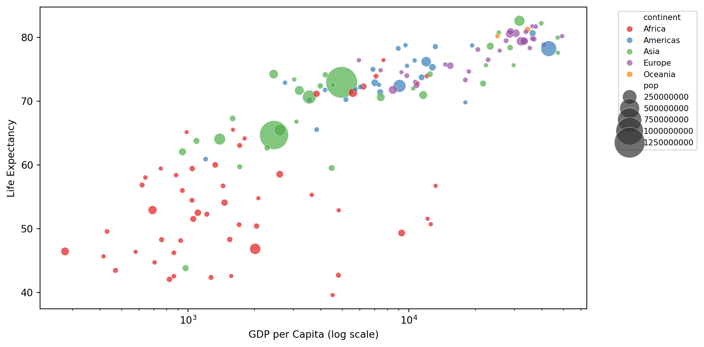
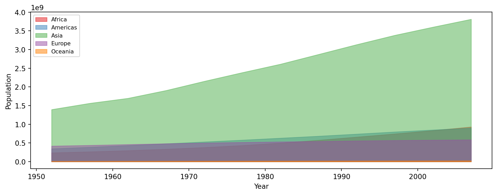
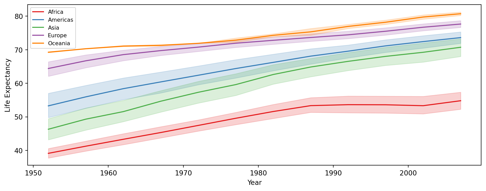
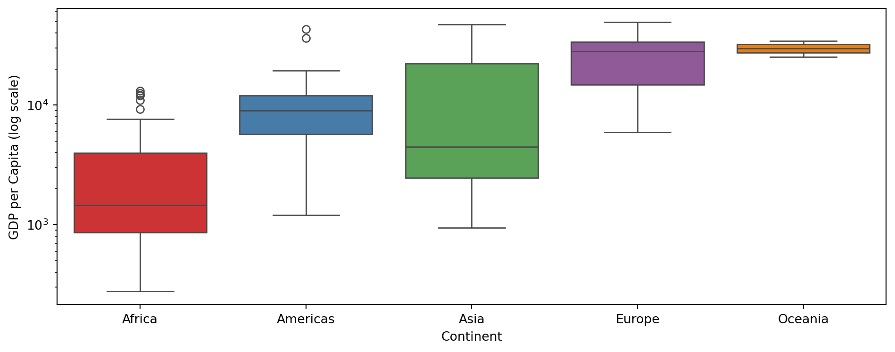
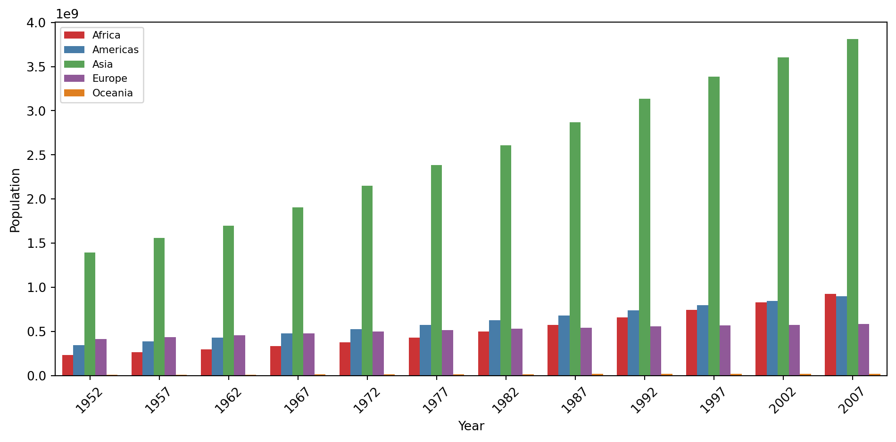
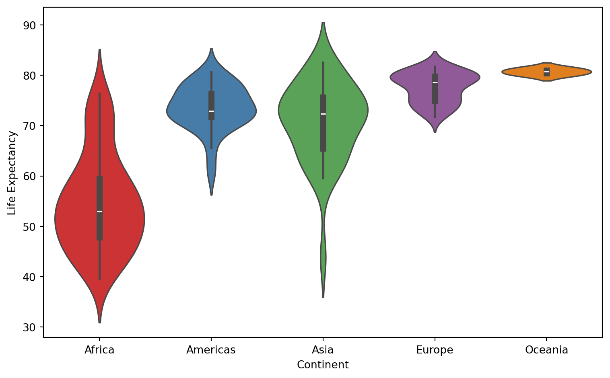

Countries
142
Years Covered
1952–2007
Continents
5

Each bubble is a country in 2007. The bubble size corresponds to the population
Richer countries clearly cluster in the top-right. Antother key observation is that gains in life expectancy flatten once GDP rises above ~$10k.




This dashboard explores the Gapminder dataset, tracking development indicators across 142 countries from 1952 to 2007.
Key indicators include GDP per capita, life expectancy, and population across five continents.
Data source: gapminder.org

Learn more about the Gapminder dataset at https://www.gapminder.org/data/documentation/
| Loading ITables v2.7.3 from the internet... (need help?) |